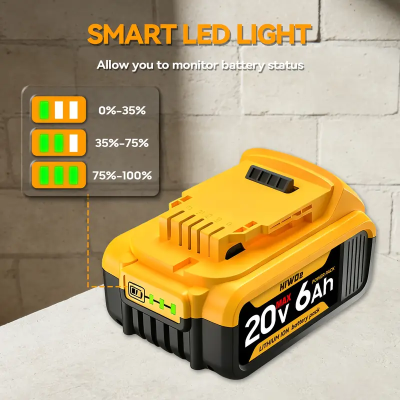
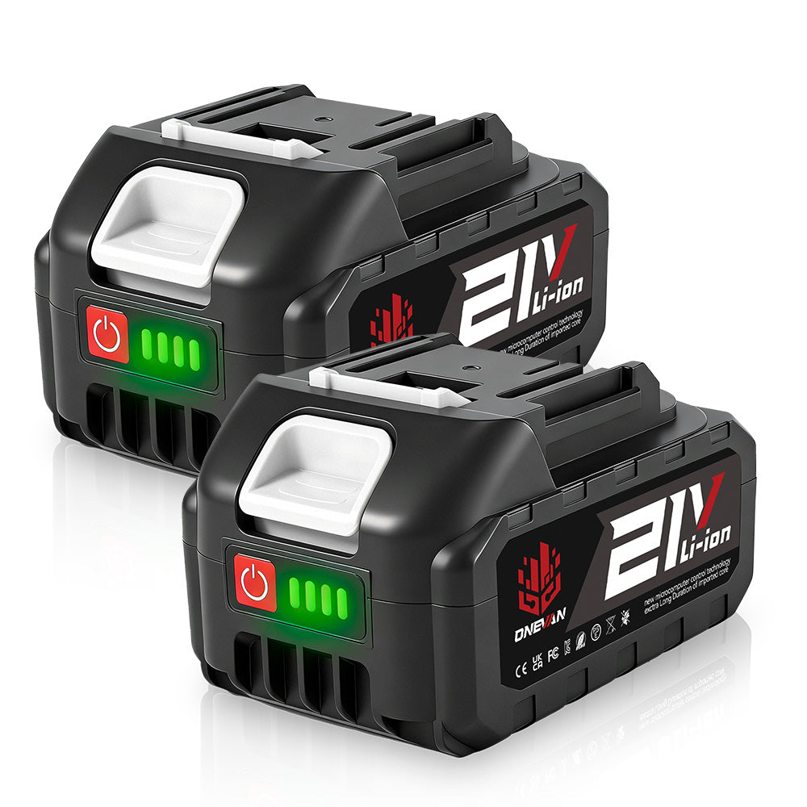
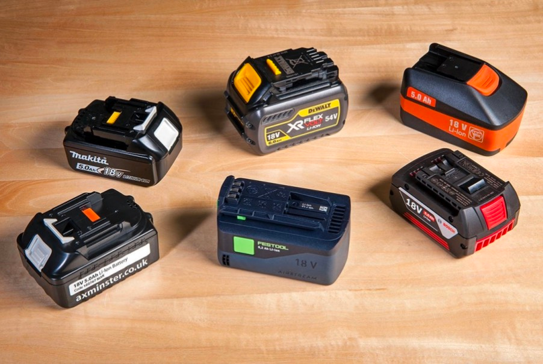
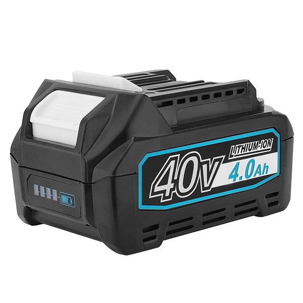

Baterías para herramientas eléctricas




Baterías recargables diseñadas para taladros, amoladoras, sierras y otras herramientas eléctricas.
Disponibles en diferentes capacidades y voltajes según las necesidades de cada herramienta.